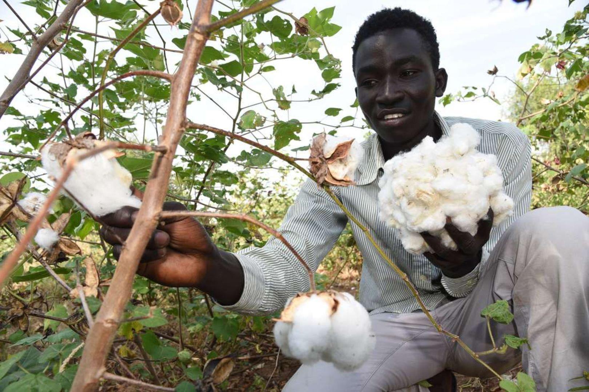

🇰🇪 The Journey in Kenya
Follow the connections behind a cotton T-shirt
Explore how cotton farming, textile production and clothing markets connect to Kenya. Select each numbered stop on the map to discover more about the journey.
🗺️ Explore the Map
Select a numbered location to explore its role in Kenya's clothing industry.
This is an illustrative map, not a precise geographical route. The locations represent different parts of Kenya's clothing industry.

Cotton Farming
Eastern and Coastal Kenya
Cotton is grown by farmers in parts of Kenya. After harvesting, the cotton is collected and prepared for processing.
🌍 Kenya and the Global Clothing Industry
Kenya's clothing industry is connected to international supply chains. Some cotton and fabrics are produced locally, while other materials and finished garments are imported.
This means that a T-shirt bought in Nairobi may have been manufactured in Kenya or transported from another country. Its journey depends on where its materials and finished products came from.